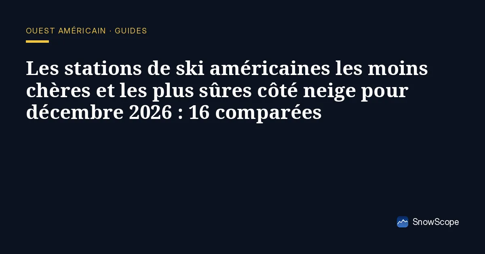

Les stations de ski américaines les moins chères et les plus sûres côté neige pour décembre 2026 : 16 comparées
Pas cher et sûr côté neige : les deux se combinent rarement sur un même forfait en décembre. Nous avons classé 16 stations américaines à petit budget selon un seul chiffre honnête tiré de notre historique de neige, la part des hivers avec au moins 20 in (50 cm) à mi-pente le 15 décembre, et comparé chacune au prix du forfait journée adulte affiché sur sa page officielle.
Consultez les prévisions neige en temps réel pour US West sur l'application SnowScopeHauteurs de neige, alertes poudreuse et carte 3D, gratuitement.
Le classement, du plus sûr au plus risqué
En tête, Grand Targhee a eu 20 in ou plus à mi-pente le 15 décembre dans 100 % de nos 46 hivers. Viennent ensuite Mt. Baker (93 %), Brighton (89 %), White Pass, Snow King et Brundage (87 % chacune), Lookout Pass et Schweitzer (85 %), Montana Snowbowl (83 %) et Timberline (78 %).
La seconde moitié du classement est celle où décembre devient incertain : Wolf Creek et Sunlight (72 %), Ski Cooper (70 %), Loveland (67 %), Beaver Mountain (57 %) et Bridger Bowl (50 %). Les chiffres de la carte suivent cet ordre.

Le bon compromis : assez sûr et pas cher
Cinq stations combinent des chances supérieures à 80 % avec un prix vérifié sous 80 $. Brundage démarre aussi bas que 65 $ certains jours (87 %). White Pass démarre à 69 $ en ligne les jours creux (87 %). Lookout Pass est à 63 $ en semaine avec réservation (85 %). Brighton démarre à 72 $ en achetant tôt (89 %). Montana Snowbowl est à 78 $ en semaine (83 %).
Trois de ces tarifs sont des prix « à partir de » qui augmentent au fur et à mesure que les dates se remplissent : l'astuce est donc la même partout, choisir un jour de semaine et réserver tôt.
La neige sûre, mais elle se paie
Grand Targhee et Mt. Baker sont les deux valeurs les plus sûres de notre liste pour décembre. Le billet en ligne de Targhee va de 125 $ à 180 $ selon la date. Mt. Baker ne vend que sur place, 98,80 $ en heures creuses et 115,42 $ les jours de pointe. Snow King, à Jackson, démarre à 100 $, et le forfait journée complète de Timberline est à 129 $ en heures creuses, ou 96 $ pour une après-midi creuse. Le 3-Pack de Schweitzer coûte 249 $, ce que la station ramène à 83 $ la journée.
Pas cher, mais armez-vous de patience
Les prix les plus bas se trouvent du côté de la neige la moins sûre. Ski Cooper facture 49 $ en semaine. Loveland vend des billets en ligne à 60 $ jusqu'au 13 décembre, avant que le prix au guichet ne grimpe à 159 $. Sunlight démarre à 74 $, Beaver Mountain affiche un tarif unique de 75 $, Bridger Bowl 86 $ en ligne et Wolf Creek 96 $ les jours normaux.
Ce sont de bons choix pour décembre si vos dates sont flexibles : la part des hivers avec une bonne neige augmente chaque semaine du mois, et la plupart de ces stations sont bien plus sûres à Noël qu'au 15 décembre.
Comment lire ces chiffres
Nos chiffres de neige décrivent les 46 hivers passés, de 1980-81 à 2025-26, et non une prévision pour celui-ci. Une mi-décembre typique à mi-pente va de 20 in (51 cm) à Bridger Bowl à 52 in (132 cm) à Timberline et 46 in (118 cm) à Grand Targhee. Les prix ont été relevés sur la page officielle de chaque station le 13 novembre 2026 ; les prix dynamiques évolueront.
Conseils aux skieurs
- Réservez en semaine : presque toutes les stations de cette liste sont moins chères du lundi au jeudi, voire le vendredi.
- Si vous devez skier début décembre, choisissez en haut du classement ; si vous pouvez attendre la semaine de Noël, le bas de gamme devient bien plus sûr.
- Achetez en ligne et tôt là où les prix sont dynamiques : les tarifs « à partir de » vont aux acheteurs les plus rapides.
- Vérifiez la carte de neige la semaine avant de partir : un décembre maigre peut arriver n'importe où.
Références et crédits
- Grand Targhee, winter lift tickets 2026-27 (official) www.grandtarghee.com/tickets-passes/lift-tickets/winter-lift-tickets
- Mt. Baker Ski Area, daily lift tickets (official) www.mtbaker.us/tickets-and-passes/daily-lift-tickets/
- Brighton Resort, lift tickets 2026/27 (official) www.brightonresort.com/lift-tickets
- White Pass, online day tickets 2026/27 (official) skiwhitepass.com/online-day-ticket-sales
- Snow King Mountain, winter day tickets (official store) store.snowkingmountain.com/en/catalogue/category/500-winter-lift-tickets/510-day-ticket_447/
- Brundage Mountain, daily lift tickets (official) brundage.com/daily-lift-tickets/
- Lookout Pass, lift tickets 2026-2027 (official) skilookout.com/lift-tickets/
- Schweitzer, lift ticket 3-Pack 2026/2027 (official) www.schweitzer.com/plan-your-trip/deals-and-packages/lift-ticket-3pack
- Montana Snowbowl, lift tickets 2026/27 (official) montanasnowbowl.com/sbblog/lift-tickets/
- Timberline Lodge, winter lift tickets 2026/2027 (official) www.timberlinelodge.com/activities/winter/lift-tickets/
- Wolf Creek Ski Area, tickets and passes 2026-2027 (official) wolfcreekski.com/tickets-passes/
- Sunlight Mountain Resort, lift tickets (official) sunlightmtn.com/lift-tickets/
- Ski Cooper, day pass 2026-27 (official) www.skicooper.com/cooper-day-pass/
- Loveland Ski Area, lift tickets 2026-27 (official) skiloveland.com/lift-tickets/
- Beaver Mountain, tickets and passes 2026-2027 (official) www.skithebeav.com/tickets-and-passes/
- Bridger Bowl, lift ticket pricing 2026/27 (official) bridgerbowl.com/tickets-passes/lift-tickets
- OpenSkiMap (mapped lifts and runs) openskimap.org/
À propos de ces chiffres
Chiffres de neige : historique SnowScope, 46 hivers passés (1980-81 à 2025-26) aux altitudes indiquées (bas, mi-pente, sommet), une reconstitution de la neige passée pour une zone, corrigée de l'altitude (base ERA5-Land ; Snow_Hydro 1 km pour le Maroc), pas les bulletins de la station. Neige actuelle : la carte SnowScope. Remontées, pistes et altitudes : cartographie OpenSkiMap. Prix : les pages officielles listées ci-dessous, consultées le 13 novembre 2026 ; les prix dynamiques varient avec la date et la demande.
Citer ce bulletin
Pour la recherche, l'enseignement ou la presse : chiffres et graphiques réutilisables librement sous CC BY 4.0 avec cette citation.
SnowScope (2026), Les stations de ski américaines les moins chères et les plus sûres côté neige pour décembre 2026 : 16 comparées, https://snowscope.app/blog/fr/2026/11/cheapest-snow-sure-us-ski-areas-december-2026.html, consulté le 2026-11-14
SnowScope (Atlas Labs). (2026, November 14). Les stations de ski américaines les moins chères et les plus sûres côté neige pour décembre 2026 : 16 comparées. SnowScope snow reports. https://snowscope.app/blog/fr/2026/11/cheapest-snow-sure-us-ski-areas-december-2026.html
BibTeX
@misc{snowscope2026cheapestsnowsureusskiare,
author = {{SnowScope (Atlas Labs)}},
title = {Les stations de ski américaines les moins chères et les plus sûres côté neige pour décembre 2026 : 16 comparées},
year = {2026},
month = nov,
howpublished = {\url{https://snowscope.app/blog/fr/2026/11/cheapest-snow-sure-us-ski-areas-december-2026.html}},
note = {Published 2026-11-14 14:47 UTC; accessed 2026-11-14}
}· CC BY 4.0 · Méthodes, données et outils →
Suivre US West
Gratuit : un message quand la neige arrive, et la météo chaque matin.